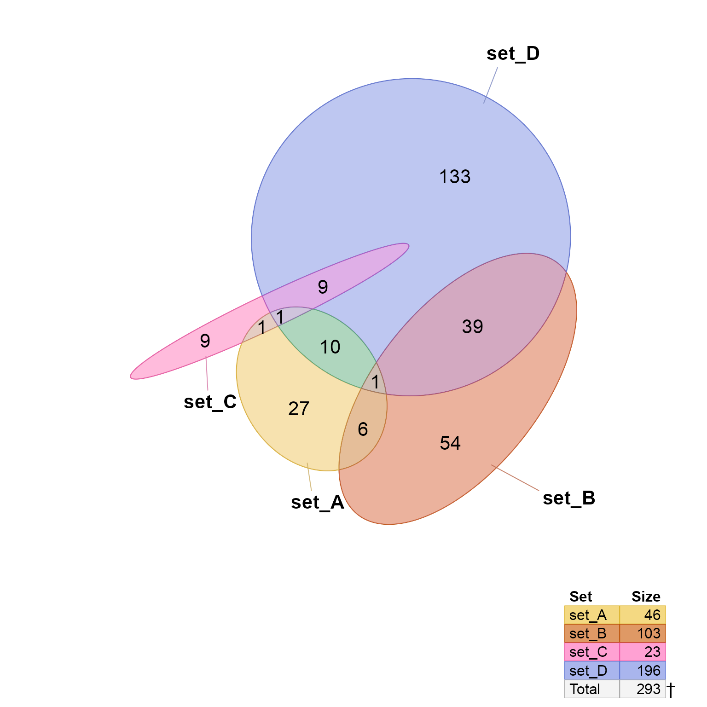
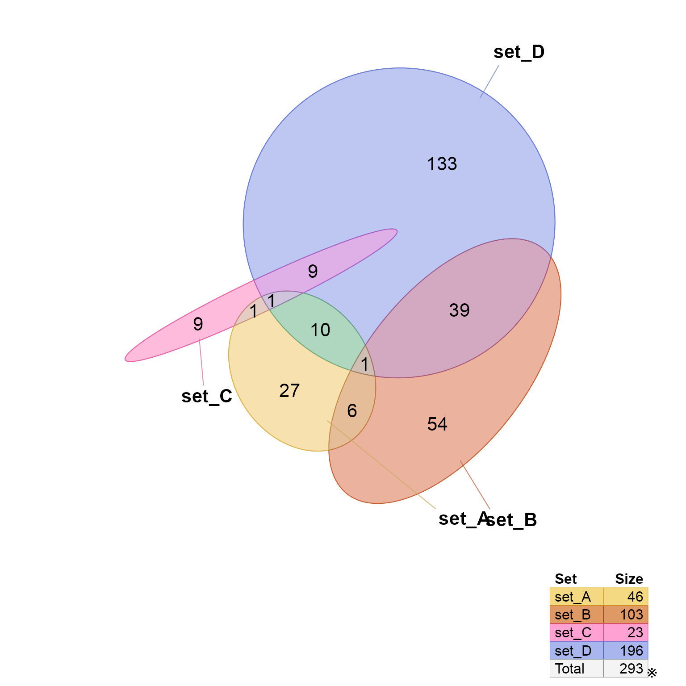

Add Venndir footnotes to a Venndir figure
Usage
render_venndir_footnotes(
venndir_output,
x = "bottomright",
footnote_x_inset = grid::unit(0, "lines"),
footnote_y_inset = grid::unit(0.5, "lines"),
footnote_fontfamily = NULL,
footnote_color = "black",
footnote_fontsize = 14,
footnote_outline = TRUE,
footnote_style = c("symbols", "header", "footnote"),
draw_footnote = TRUE,
use_devoid = getOption("use_devoid", TRUE),
verbose = FALSE,
...
)Arguments
- venndir_output
Venndirobject- x
characterposition for the footnote- footnote_fontfamily, footnote_color, footnote_fontsize
arguments to customize the font and color used to render the footnote.
- footnote_outline
logicalwhether to draw an outline around the footnote for visible clarity, default TRUE. It callsjamba::setTextContrastColor()usingfootnote_color.- draw_footnote
logical, default TRUE, whether to draw the resulting footnote when one or more footnotes are defined. WhenFALSEa gridgrobis returned if footnotes exist, otherwise it returns NULL.- ...
additional arguments are ignored.
Details
This function adds a subtle footnote symbol, or symbols, if
they are defined in the 'metadata' slot of the input Venndir
object, entry 'footnotes'. Footnote symbols are comma-delimited
and displayed together.
The intention is to have a visibly distinct indication when some footnote exists and should be reviewed.
See also
Other venndir internal:
assemble_venndir_label(),
assign_degree_groups(),
check_systemfonts_family(),
expand_range(),
get_venn_polygon_shapes(),
make_degrees_clockwise(),
make_venn_combn_df(),
match_list(),
print_color_df(),
shrink_df(),
simple_ellipse(),
subset_systemfonts(),
venndir_label_style(),
venndir_to_df()
Examples
setlist3 <- make_venn_test(500, n_sets=4)
v3 <- venndir(setlist3,
shape="ellipse",
vector_method="label",
proportional=TRUE)
footnotes(v3)
#> symbol type note
#> 1 † hidden overlap 1 overlap cannot be displayed.
render_venndir_footnotes(v3)

v3 <- venndir(setlist3,
shape="ellipse",
footnote_symbols="\u203B",
proportional=TRUE)

footnotes(v3)
#> symbol type note
#> 1 ※ hidden overlap 1 overlap cannot be displayed.